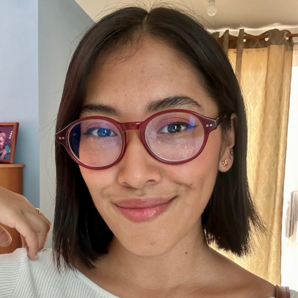

Ivanna Saucedo Dorantes

Yo soy Ivanna, tengo 23 años, estudié biología en la UNAM y ahora me encuentro en Generation para convertirme en una desarrolladora Java FullStack, siempre me ha apasionado la tecnología y estar en constante aprendizaje, para ser la mejor versión de mí misma cada día.
Mis hobbies
- Ir a conciertos
- Tocar el piano
- Descubrir nueva música
- Jugar videojuegos
- Ir al cine
Mi top 5 canciones favoritas del momento
- On your side - The Last Dinner Party
- Red Wine Supernova - Chappell Roan
- Me and My Husband - Mitski
- Witches - Alice Phoebe Lou
- In Dreams - Sierra Ferrell